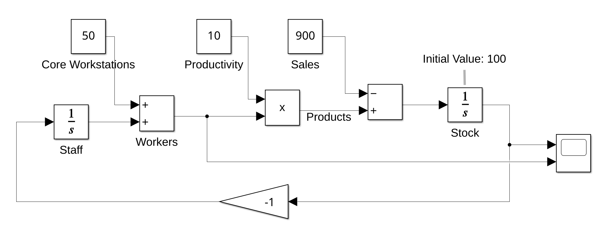
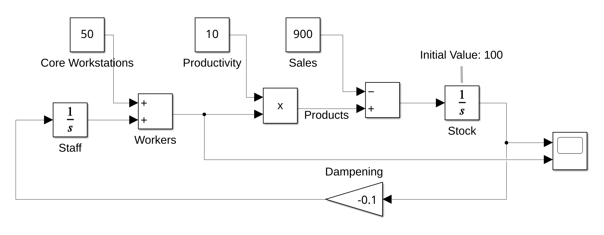
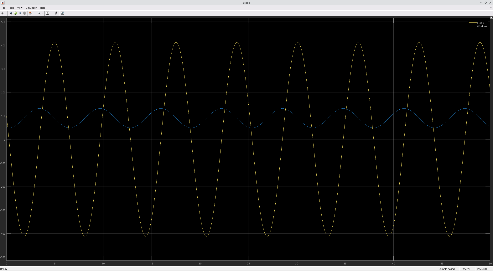
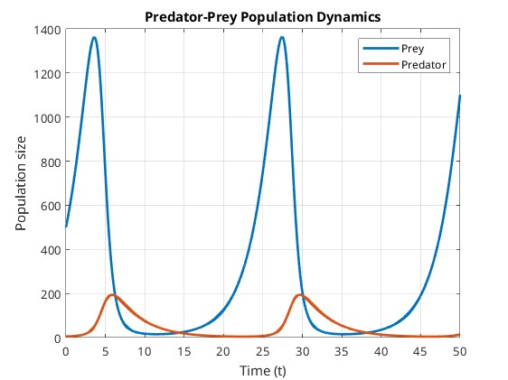
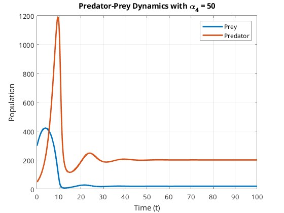
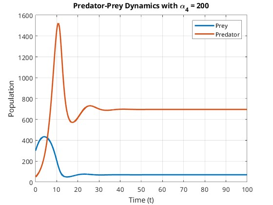

Übung 05
Task 1
a)
Simulate (in SIMULINK) the control of the hiring & firing of workers depending on the stock level of a production environment. Initially assume a steady sales of 900 units, a productivity of 10 units per worker, a base of 50 core workstations, and an initial stock level of 100 stock units. Document your model and corresponding test results - does this system converge?

Simulation durchgeführt mit Runge-Kutta Verfahren und einer fixen Schrittweite von 0.01s
Die Simulations-Ergebnisse zeigen, dass das System schwingt und nicht konvergiert.
b)
Introduce a damping constant into the model (with coefficient 0.1). How does this change your model and how does it affect the simulation?
 
Simulation durchgeführt mit Runge-Kutta Verfahren und einer fixen Schrittweite von 0.01s
Die Simulations-Ergebnisse zeigen, dass das System schwingt und nicht konvergiert. Die Dämpfung beeinflusst Frequenz und Amplitude.
c)
Let us now assume that the price is calculated as (200 – stock level / 10). Additionally assume that the sales depend on the price, so that the sales are calculated as (900 – price / 10). Again, document your model and the resulting simulations.


Simulation durchgeführt mit Runge-Kutta Verfahren und einer fixen Schrittweite von 0.01s
Das System konvergiert. Lagerstand, Belegschafts-Bestand, Verkäufe und der Preis erreichen nach gewisser Zeit einen stabilen Zustand.
Task 2
The proliferation of the fruit fly was experimentally investigated by R. Pearl in 1920 and the following equation for the population P (t) (t measured in days) was found: P'(t) = (1/5) P(t) - (1/5175)P2 (t). How big is the population after 12 days, if there are initially 10 fruit flies? How many individuals are there eventually in the population? Draw the progress of the population size until that day where 99% of the maximum value are reached.
Lösungsidee
- Die Differentialgleichung P'(t) = (1/5)P(t) - (1/5175)P²(t) beschreibt ein logistisches Wachstum, das durch einen linearen Wachstumsterm und einen quadratischen Begrenzungsterm charakterisiert ist.
- Zur Ermittlung der numerischen Lösung wird das Euler-Verfahren genutzt.
- Beim Erreichen von 99% der Maximimal Population wird die Berechnung mittels Euler-Verfahren abgebrochen.
Implementierung
function population_flies()
% Parameters
a = 1/5; % Growth rate (alpha)
b = 1/5175; % Capacity parameter (beta)
x0 = 10; % Initial population
t_s = 0.01; % Time step size
t_max = 100; % Maximum observation time
threshold = 0.99; % 99% of the maximum population
% Initialization
t = 0:t_s:t_max; % Time vector
P = zeros(length(t), 1); % Population array
P(1) = x0; % Set initial population
% Euler
for i = 1:length(t)-1
P_ = a * P(i) - b * P(i)^2; % Compute population derivative
P(i+1) = P(i) + t_s * P_; % Update population using Euler step
% Stop when 99% of the maximum population is reached
P_max = a / b; % Analytical maximum population
if P(i+1) >= threshold * P_max
t = t(1:i+1); % Trim time vector
P = P(1:i+1); % Trim population vector
break;
end
end
% Display results
fprintf('Population after 12 days: %.2f\n', P(round(12/t_s)));
fprintf('Asymptotic population size: %.2f\n', a / b);
% Plot the population growth
plot(t, P, 'LineWidth', 2);
xlabel('Time (days)');
ylabel('Population');
title('Fruit Fly Population Growth');
grid on;
legend('Population over time');
end
Aufruf
population_flies()
Population after 12 days: 100.12
Asymptotic population size: 1035.00

Task 3
a)
For a typical predator – prey scenario let us assume:
- Grow constant and average number of preys: 0.4 and 300 resp.
- Loss rate and average number of predators: 0.3 and 50, resp.
Calculate the course of the predator and prey population starting with R0 = 5 and B0 = 500.
Lösungsidee
- Es werden die Lotka-Volterra-Gleichungen als Grundlage verwendet, die die Wechselwirkung zwischen Predator- und Prey-Populationen beschreiben.
- Die numerische Integration erfolgt mittels des Euler-Verfahrens.
- Die Ergebnisse werden geplottet, sodass die nicht konvergierende Oszillation und Phasenverschiebung zwischen Prey- und Predatorpoulation ersichtlich ist.
Implementierung
function predator_prey(b0, r0, alpha, beta, gamma, delta, t_s, t_max)
% Default parameters
if nargin == 0
alpha = 0.4; % Growth rate of prey
beta = 0.008; % Interaction coefficient prey-predator
gamma = 0.3; % Loss rate of predators
delta = 0.001; % Growth rate of predators from prey
b0 = 500; % Initial prey population
r0 = 5; % Initial predator population
t_s = 0.001; % Time step size
t_max = 50; % Maximum simulation time
end
% Initialization
t = 0:t_s:t_max;
n_steps = length(t);
b_prog = zeros(n_steps, 1);
r_prog = zeros(n_steps, 1);
b = b0;
r = r0;
% Euler
for i = 1:n_steps
b_ = alpha * b - beta * b * r; % Change in prey
r_ = -gamma * r + delta * b * r; % Change in predator
b = b + b_ * t_s; % Update prey population
r = r + r_ * t_s; % Update predator population
b_prog(i) = b; % Save prey population
r_prog(i) = r; % Save predator population
end
% Plot the results
plot(t, b_prog, 'LineWidth', 2);
hold on;
plot(t, r_prog, 'LineWidth', 2);
xlabel('Time (t)');
ylabel('Population size');
title('Predator-Prey Population Dynamics');
legend('Prey', 'Predator');
grid on;
hold off;
end
Aufruf
predator_prey

b)
Using the following predator-prey model with limit cycles:
Where:
- : prey population at time
- : predator population at time
- , , , , ,
- Simulate the dynamics of and over time for the initial conditions , . Plot their trajectories over time.
- Analyze the effect of on the predator-prey interaction by varying its value (e.g., 50,100,200). How does it influence the stability or equilibrium of the populations?
- Discuss the meaning of the saturation terms for both predator and prey (e.g., ), and how they alter the dynamics compared to simpler models like Lotka-Volterra.
Lösungsidee
- Die Lösung von Teilaufgabe a) wird erweitert mit den zur Verfügung gestellten Differential-Gleichungen.
Implementierung
function predator_prey_limit(alpha4_values)
% Parameters
alpha1 = 0.6; % Prey growth rate
alpha2 = 500; % Prey capacity
alpha3 = 0.2; % Predation rate
alpha5 = 0.4; % Predator growth rate
alpha6 = 0.1; % Predator saturation parameter
b0 = 300; % Initial prey population
r0 = 50; % Initial predator population
t_s = 0.01; % Time step
t_max = 100; % Total simulation time
% Time vector
t = 0:t_s:t_max;
n_steps = length(t);
% Loop through different alpha4 values
for alpha4 = alpha4_values
% Initialize populations
b = b0;
r = r0;
b_progress = zeros(n_steps, 1);
r_progress = zeros(n_steps, 1);
% Euler
for i = 1:n_steps
db_dt = b * (alpha1 * (1 - b / alpha2) - (alpha3 * r) / (b + alpha4));
dr_dt = r * alpha5 * (1 - (alpha6 * r) / b);
b = b + db_dt * t_s;
r = r + dr_dt * t_s;
b_progress(i) = b;
r_progress(i) = r;
end
% Plot results
figure;
plot(t, b_progress, 'LineWidth', 2);
hold on;
plot(t, r_progress, 'LineWidth', 2);
xlabel('Time (t)');
ylabel('Population');
title(['Predator-Prey Dynamics with \alpha_4 = ', num2str(alpha4)]);
legend('Prey', 'Predator');
grid on;
hold off;
end
end
Aufruf
predator_prey_limit([50, 100, 200]);



Theorie-Fragen
Auswirkung von : Je höher , desto